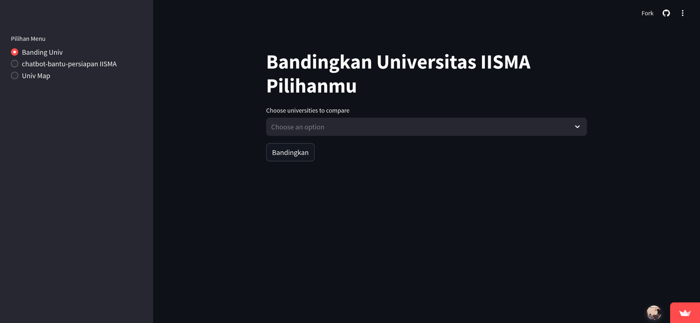
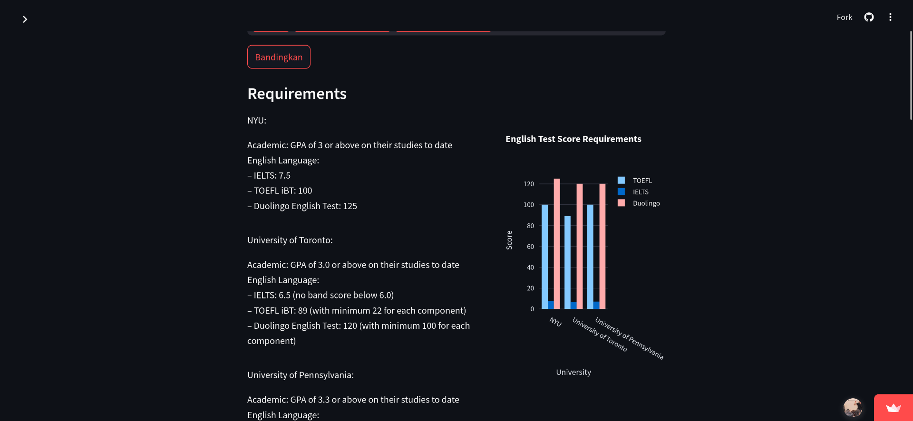
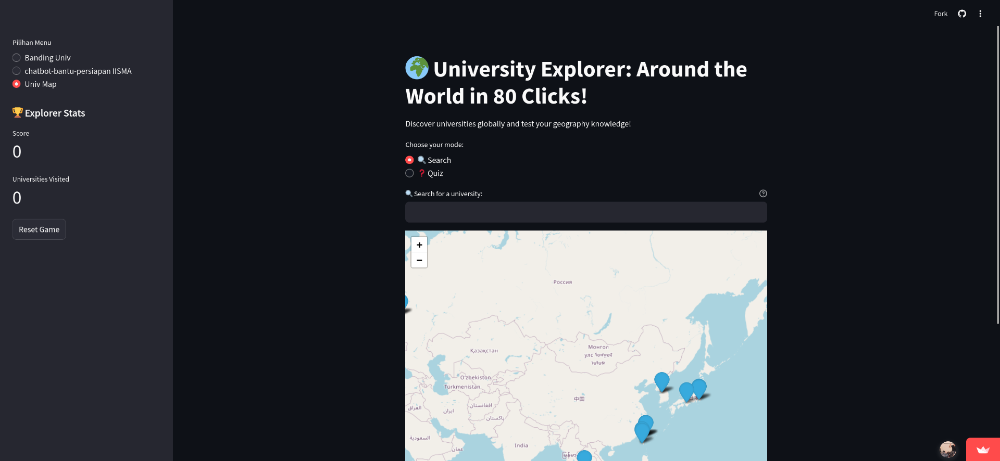
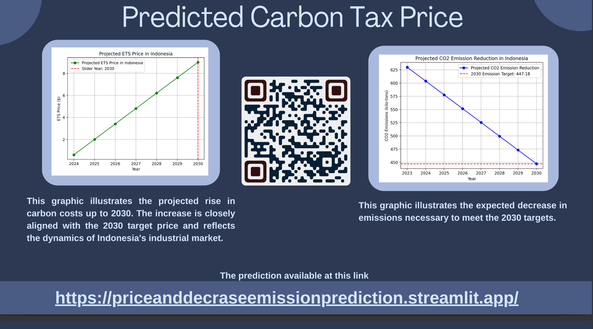
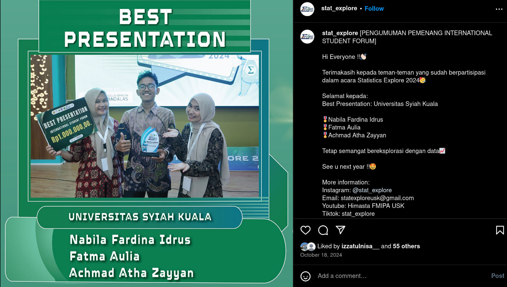
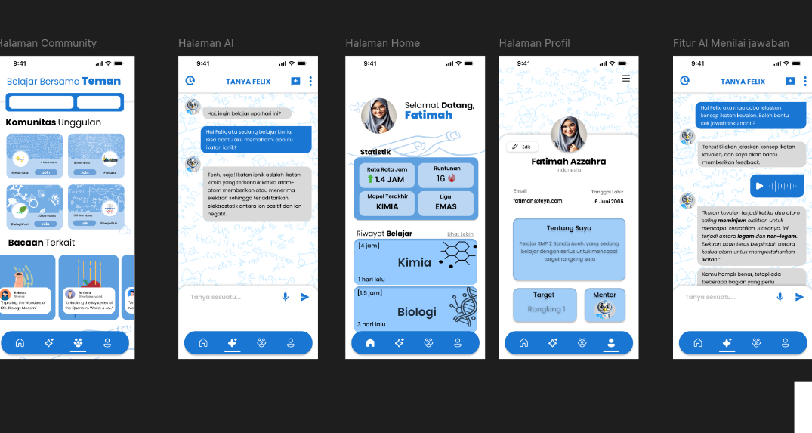
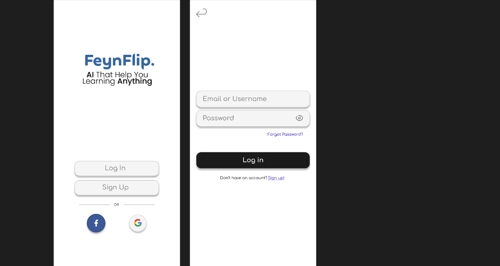

Here are some of the stuff I've worked on. Enjoy!
IISMA Univ Comparison
2023
The IISMA Univ Comparison project is a comprehensive analysis and comparison of various universities participating in the IISMA program. This project aims to provide prospective students with valuable insights into the academic offerings, campus life, and overall experience at different institutions. By leveraging data visualization and interactive elements, users can easily compare universities based on key metrics and make informed decisions about their study abroad options.



Arima Emissions predict
2023
The Arima Emissions predict project was created as part of my enrollment in the International Student Forum in Statistics at USK. This project utilizes ARIMA modeling to predict emissions data. Our team won the award for the best presentation at the forum.


FeynFlip (Idea Stage)
2023
The FeynFlip project is an innovative application inspired by the Feynman Technique. This project aims to simplify complex concepts by breaking them down into easy-to-understand explanations. By encouraging users to teach what they've learned, FeynFlip helps reinforce knowledge and identify gaps in understanding. The application leverages interactive elements and data visualization to make learning more engaging and effective.

